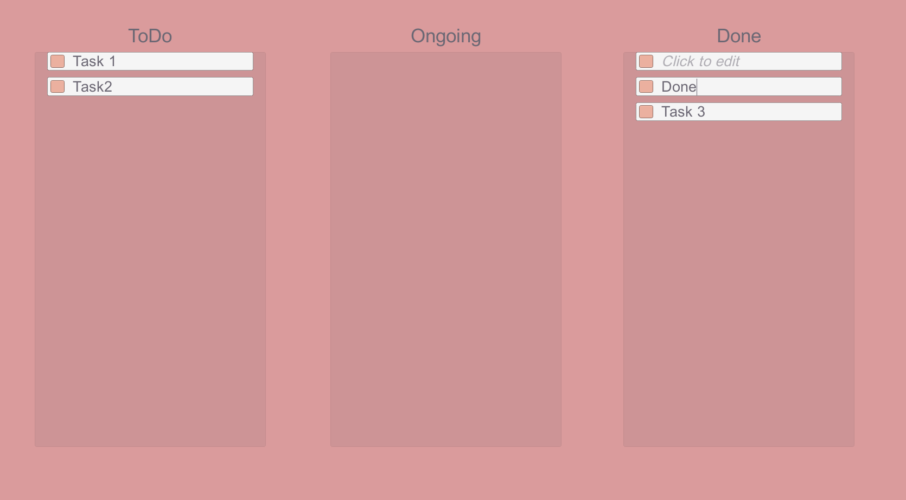
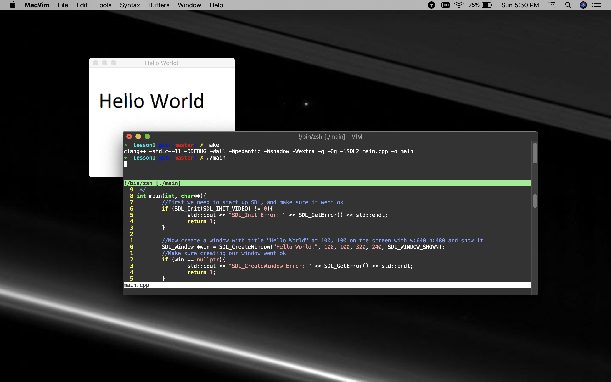
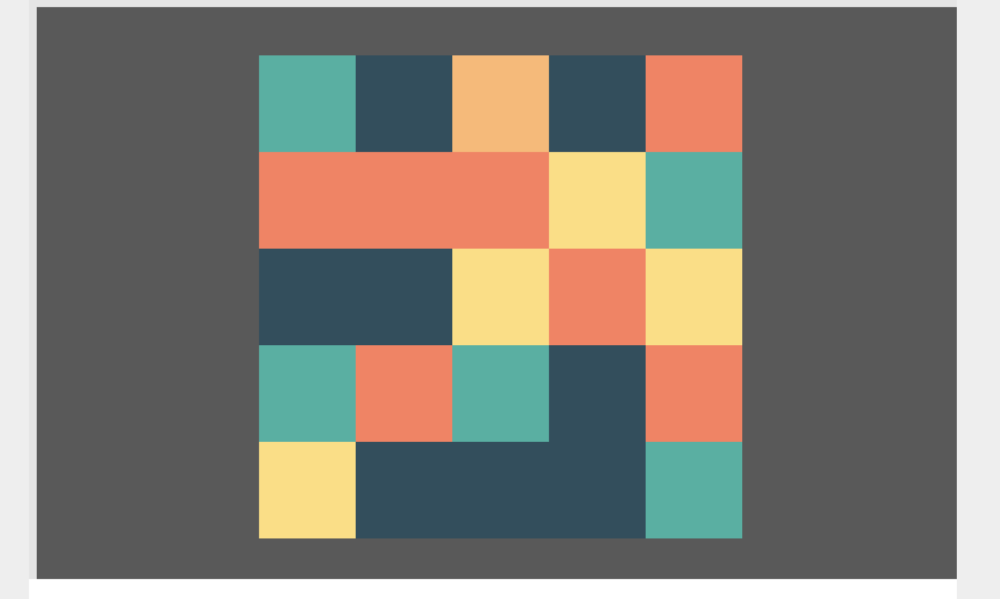
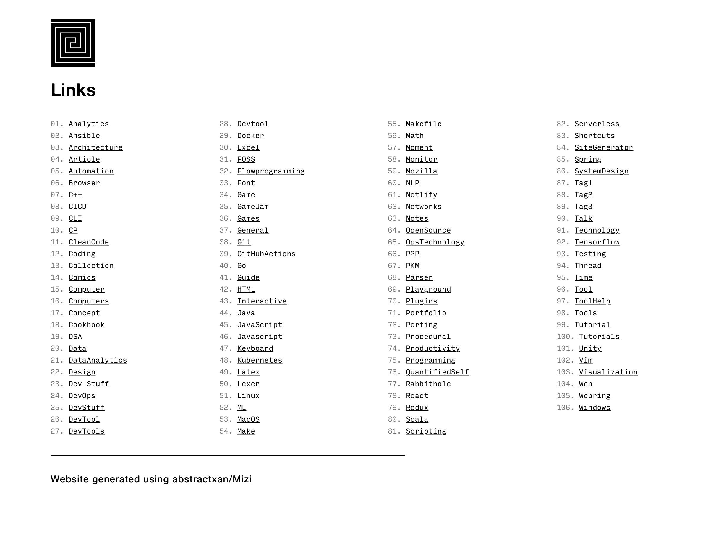
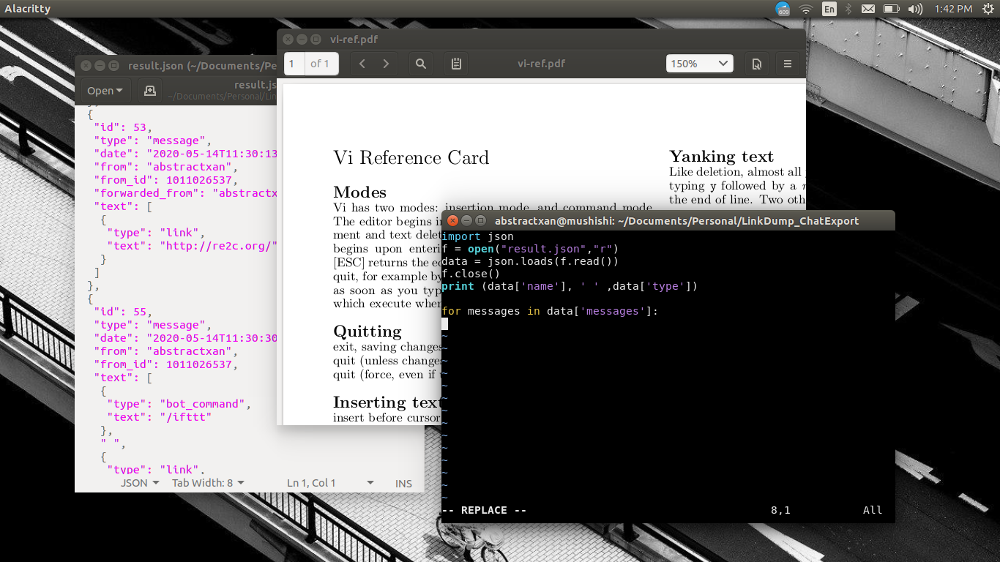
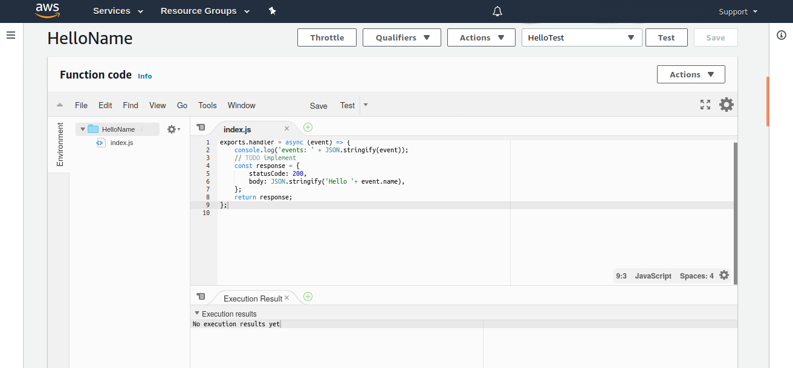
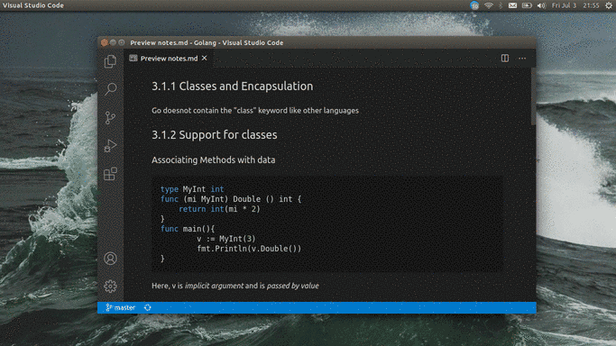
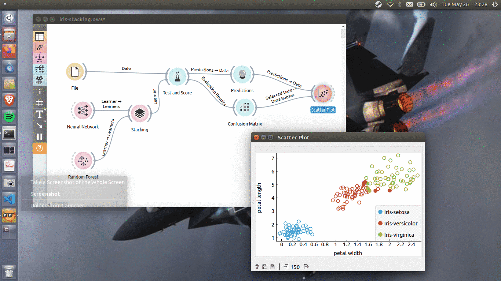
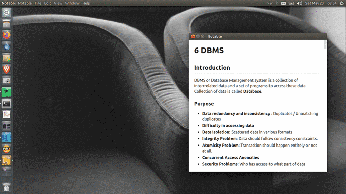
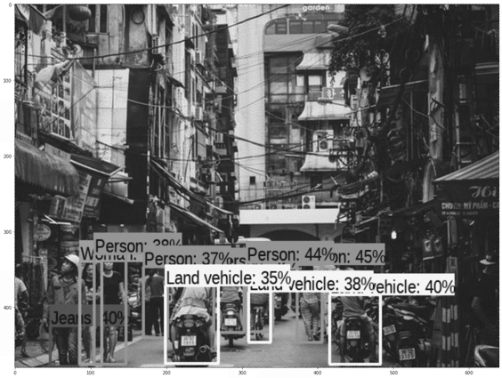

Journal
Journal shows recent updates.
 250421 - Unity Trees | Repository
250421 - Unity Trees | Repository
 271020 - Unity Kanban | Repository

111020 - SDL2 Hello World

031020 - Panels - A small prototype for generating a random 2D grid. | Repository

270920 - Link Pump gets a new look!

250920 - RSS Reader for updates

080920 - Won the CS50 Puzzle Day | Team

220820 - Learning Vim!

160820 - Getting a feel of some PHP

110820 - Learning AWS Lamda and Serverless applications
180720 - Programming with Google Go Specialization | Coursera | Code

030720 - Object Oriented Programming in Golang | Notes | Coursera

090620 - miniNDN experiments | Github

250520 - Golang

250520 - Orange

220520 - Database Concepts Notes

190520 - MobileNet tf.js implementation | image

180520 - Object Detection | image

170520 - Perlin Noise

150520 - CNN Cat/Dog Model